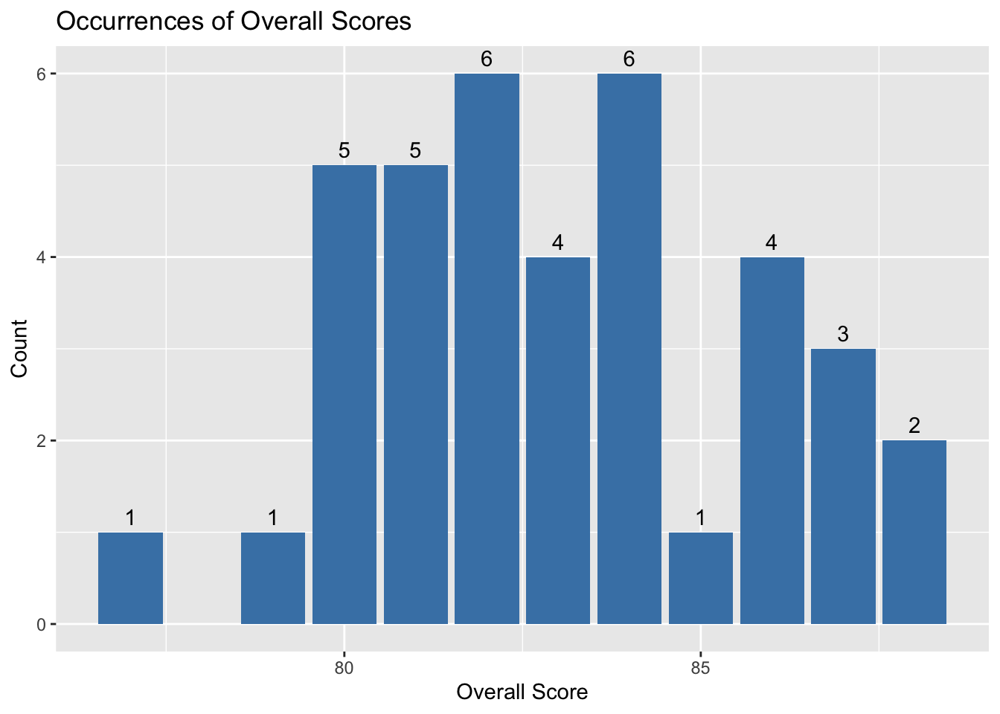

library(tidyverse)
library(plotly)
knitr::opts_chunk$set(echo = TRUE, warning=FALSE, message=FALSE)
knitr::opts_knit$set(root.dir = "/Users/liviacharles/Documents/R Class/601_Spring_2023")Final Project
final_Project
Final Project Paper and Code
Introduction
I’ve recently found myself in a situation that applies to hundreds of thousands, perhaps millions of people each year: I need to purchase a new tennis racquet, but am completely overwhelmed by the multitude of options to choose from.
Every tennis racquet plays very differently and can have an impact on player performance. I am just starting to play and have found that finding the right racquet to buy is a tricky process, and while there are reviews and suggestions on racquets to buy, it is quite overwhelming. So here, I plan to use the power of data and code to narrow down the racquet options from well over a hundred to just a few that will fit my playing level, game style, and individual requirements for a racquet. The same methodology could be applied to other players by making adjustments for their skill level, experience with other racquets, play style, etc.
The Data
I am using several different data sets which originated from the website Tennis Warehouse. The data sets are constantly updated, and the versions I have are current as of May 1, 2023. All the data sets contain information on different tennis racquets.
The first data set is a compilation of reviewer scores for each unique racquet that has been reviewed. Each row in the data set represents a different racquet and reviewer score combination (i.e. every row contains the name of a racquet, a score category, and the reviewer score given for that category). There are several different score variables that correspond to important characteristics of a tennis racquet such as power, control, spin potential, etc.
# Read in the reviewer scores data set
reviewer_scores <- read.csv("posts/data_LiviaCharles/reviewer_scores.csv", header = T)
# Look at the head of the data
head(reviewer_scores)# Check the dimensions of the data set
dim(reviewer_scores) [1] 1677 3# Check for rows that contain NAs
which(!complete.cases(reviewer_scores))integer(0)getwd()[1] "/Users/liviacharles/Documents/R Class/601_Spring_2023"The second and third data sets are both compilations of technical specifications for each tennis racquet. They are broken into two data sets because one data set contains measurements that are generated by a specific machine, while the other contains more general specifications that are usually provided by the racquet manufacturer.
The second data set, which is called the specifications data set contains the racquet name, a racquet specification, and one or two values in each row, depending on the specification. Specifications include values for the length of the racquet, the weight of the racquet, the racquets string pattern, etc.
The third data set, called the rate data set, is configured similarly to the first two, with each row containing a racquet name and a value for one of the two measurements given by the specific machine used to test for racquet stiffness and swingweight. So in this data set, each unique racquet has two rows of data, one containing the value for its stiffness and the other for its swingweight.
#Read in the racquet specs and racquet rates data sets
racquet_specs <- read.csv("posts/data_LiviaCharles/racquet_specs.csv", header = T)
racquet_rates <- read.csv("posts/data_LiviaCharles/racquet_rate.csv", header = T)
# Check the head of each data set
head(racquet_specs) head(racquet_rates)# Check the dimensions of the data sets
dim(racquet_specs) [1] 917 4dim(racquet_rates) [1] 262 3# Check for rows with NAs
which(!complete.cases(racquet_specs))integer(0)which(!complete.cases(racquet_rates))integer(0)Finally, there is a fourth data set that contains the year each racquet was reviewed. Each row contians the name of the racquet and the year it was reviewed.
#Read in the racquet year data set
racquet_year <- read.csv("posts/data_LiviaCharles/racquet_year.csv", header = T)
#Check the head of the data set
head(racquet_year)#check the dimensions of the data set
dim(racquet_year) [1] 131 2# Check for rows with NAs
which(!complete.cases(racquet_year))integer(0)None of the data sets contain NAs, but I still need to make sure that they contain all the same racquets. Here I will compare the length of the data sets to see if they contain the same number of racquets.
#count the number of unique racquets in each data set
length(unique(reviewer_scores$Racquet))[1] 129length(unique(racquet_specs$Racquet))[1] 131length(unique(racquet_rates$Racquet))[1] 131length(unique(racquet_year$Racquet)) [1] 131Restructuring and combining the data sets
The data set lengths are are not all equal, meaning that each type of data was not available for every racquet. So we need to combine the data sets and only keep the racquets which have every data set. First though, we also need to restructure the data sets. For the specs data set, I only need the values in column Value1, except for those that correspond to the Balance Point.
#Create a new column that only contains the values I need
racquet_specs <- racquet_specs %>%
mutate(Value = ifelse(Spec == "Balance Point", Value2, Value1))
#Now remove Value1 and Value2 columns
racquet_specs <- racquet_specs %>%
select(-Value1, -Value2)Now I need to transform the data sets so that each row represents a single unique racquet, except for the racquet year data which is already in an acceptable format
racquet_rates <- racquet_rates %>%
spread(Spec, Value)
racquet_specs <- racquet_specs %>%
spread(Spec, Value)
reviewer_scores <- reviewer_scores %>%
spread(Category, Score) Now I need to merge the data sets. I only want to keep racquets in the data set that have been reviewed so I will drop those that don’t appear in that data set.
temp_df <- merge(racquet_specs, racquet_rates, by = "Racquet", all = TRUE) # Merge df1 and df2
temp_df2 <- merge(temp_df, racquet_year, by = "Racquet", all = TRUE) # Merge with df3
racquet_data <- merge(temp_df2, reviewer_scores, by = "Racquet") Describing the new data set
Now that I’ve created a new data set, let’s review it to understand what is contained therein.
# Check the head of the data
head(racquet_data)# Check the dimensions of the data set
dim(racquet_data) [1] 129 24# Check to ensure the data set does not contain NAs
which(!complete.cases(racquet_data))integer(0)The new data has 129 rows, which each represent an individual racquet, so there are 129 racquets contained in this final data set. The data set has 24 columns which contain information on each racquet including the racquet name and the year it was manufactured, physical charactersitics of the racquet (e.g., string pattern, swing weight, head size, etc.) and reviewer scores (e.g., Overall, Power, Returns, etc.) for each racquet.
Every column (besides racquet name) could in theory be used to narrow down which racquets might be best for me. However, some characteristics are more important than others and will serve as a better proxy for helping me choose a new racquet than others. I will get into the more important characteristics below, but an example of some characteristics that are less important and will not be discussed include racquet composition and racquet construction. Almost all racquets are composed of some form of graphite, and there is little consensus on if one company’s graphite material is better than another’s. While material does matter, a racquet’s performance cannot be judged simply on what kind of graphite is used in the frame. Instead, reviewer scores is a better proxy. Similarly, the construction, or beam widths, of a racquet do affect performance, but there is not one rule for how a thick-beamed vs thin-beamed racquet will play. Generally thick-beamed will have more power and less feel, but again these characteristics can be judged better by other physical characteristics such as swingweight and by reviewer scores. There are other characteristics in addition to these two that I will also not use in selecting a racquet because there are better proxies in the data set, which I (and the tennis community at large) deem as more important.
Removing racquets based on physical characteristics
The resulting data frame now contains all the information I need to begin narrowing down my choice for a new racquet. There are many different variables that determine how a racquet plays, and we can explore some of those now, so that the choices I make to narrow down the racquet options make sense. For now, we’ll focus on the physical characterisitcs of the racquet and ignore reviewer scores. This is because while some racquets may have high reviewer scores, they would not be ideal for me because they may not be well suited for a beginner player or may not be well suited for my game style.
One of the most central qualities to how a racquet plays is its head size, wich is a measure of the surface area of the inner hoop of the racquet (where the strings are). Racquets range in head size with most modern racquets falling in between 95 and 100 square inches. A 5 square inch difference may not sound like much, but a 100 square inch frame will be much more powerful and forgiving than a 95 square inch frame, all thing being equal. On the other hand, the 95 square inch frame will provide much more control than the larger head size racquet. Let’s take a look at the range of head sizes of racquets in the data set.
# Remove the text in the head size column so that there are only integer values
racquet_data$`Head Size` <- as.numeric(gsub("[^0-9.]+", "", racquet_data$`Head Size`))
head(racquet_data$`Head Size`)[1] 100 100 100 100 107 100# Create a bar chart showing the occurrence of different head sizes in the data set
ggplot(racquet_data, aes(x = `Head Size`)) +
geom_bar(fill = "steelblue", na.rm = T) +
geom_text(stat = "count", aes(label = ..count..), vjust = -0.5) +
labs(x = "Head Size (sq in)", y = "Count") +
ggtitle("Occurrences of Different Head Sizes")As seen in the graph, the 100 square inch and 98 square inch head size are by far the most common head size with few racquets falling below or above 95 and 100 square inches respectively.
Since I’m a beginner, racquets with a head size below 100 square inches are unlikely to be suitable for me and so I will now restrict the dataset to only contain racquets that have a head size greater than or equal to 100.
# Filter the data set to only include racquets with a h ead size equal to or greater than 100
my_racquets <- racquet_data %>%
filter(`Head Size` >= 100)Next we’ll look at another very important characteristic for how a racquet plays: the swingweight. Swingweight is measured in units of kilogram centimeter squared (kg-cm2), but what’s really important is that swingweight is essentially a measure of how easy or difficult it is to swing a racquet through the air. A higher swingweight = more power and a lower swingweight = more manuevarability. Beginner players have trouble with higher swingweights and often cannot swing high swingweight racquets with proper form to generate good power and consistency, while more advanced players may feel limited with a racquet that has too low of a swingweight as they won’t be able to generate much power and the racquet may feel unstable.
Swingweight is influenced by other features of a racquet, mainly its overall weight and its balance. Generally, a heavier racquet will have a higher swingweight and vice versa but swingweight is also heavily incluenced by balance. Racquets can either be head heavy (more weight is contained in the head of the racquet), head light (more weight is contained in the racquet handle), or evenly balanced (racquet weight evenly distributed between head and handle of the racquet). The more head light a racquet is, the lower its swingweight and vice versa. These days, most racquets are produced to be head light, and within this data set, every single racquet is actually head light or even balanced. Let’s look at how swingweights vary based on weight and balance.
#First, check that all racquets are head light so that we don't need to specify whether a racquet is head light or head heavy within a numeric only value
unique(my_racquets$`Balance Point`) [1] "4 pts Head Light" "6pts Head Light" "6 pts Head Light"
[4] "5pts Head Light" "5.5pts Head Light" "4pts Head Light"
[7] "4pts HL" "3pts Head Light" "7 pts Head Light"
[10] "7pts Head Light" "Even Balance" "9pts Head Light"
[13] "8pts Head Light" "9pts HL" "3 pts Head Light"
[16] "6.08pts Head Light" "9 pts Head Light" "7pts HL"
[19] "5pts HL" "3pts HL" #There is at least one racquet that is even balance. We'll replace that with a value of 0 to indicate that it is even balnaced numerically.
my_racquets$`Balance Point` <- replace(my_racquets$`Balance Point`, my_racquets$`Balance Point` == "Even Balance", 0)
#Now make all values in the balance point column numeric
my_racquets$`Balance Point` <- as.numeric(gsub("[^0-9.]+", "", my_racquets$`Balance Point`))
#ensure all values in the weight column have ounces as units
unique(my_racquets$Weight) [1] "11.2oz oz" "11.3 oz" "10.6 oz" "11.2 oz" "11.8 oz" "11.1 oz"
[7] "11 oz" "11.6 oz" "11.7 oz" "11.5 oz" "10.7 oz" "10.8 oz"
[13] "11.4 oz" "10.4 oz" "10.9 oz" #convert to numeric
my_racquets$Weight <- as.numeric(gsub("[^0-9.]+", "", my_racquets$`Weight`))Now we can create scatter plots to assess how swingweight varies based on weight and balance point.
# Scatter plots: swingweight vs weight, swingweight vs balance point
ggplot(my_racquets, aes(x = Weight, y = `Swing Weight`)) +
geom_point() +
geom_smooth(method = "lm", color = "black", fill = "#D8B4FF") +
labs(x = "Weight (oz)", y = "Swing Weight") +
ggtitle("Swingweight vs Weight")
ggplot(my_racquets, aes(x = `Balance Point`, y = `Swing Weight`)) +
geom_point() +
geom_smooth(method = "lm", color = "black", fill = "#D8B4FF") +
labs(x = "Balance Point (pts head light)", y = "Swing Weight") +
ggtitle("Balance Point vs Swing Weight") At first glance, it appears that balance point doesn’t actually affect swingweight very much, but this is misleading because more head light racquets often have a higher overall weight.
ggplot(my_racquets, aes(x = `Balance Point`, y = Weight)) +
geom_point() +
geom_smooth(method = "lm", color = "black", fill = "#D8B4FF") +
labs(x = "Balance Point (pts head light)", y = "Weight (oz)") +
ggtitle("Balance Point vs Weight") As we can see, this is the case in our data set. Here I’ve shown how overall weight and balance point relate to swingweight, and each of these characteristics can be good indicators of how a racquet might play, but overall, swingweight is considered a better overall metric for helping choose a racquet. As such, I’m going to analyze the spread of swingweights in the dataset and further narrow down my racquet options.
# Create a bar plot with the number of racquets with different swing weights
ggplot(my_racquets, aes(x = `Swing Weight`)) +
geom_bar(fill = "steelblue", na.rm = T) +
geom_text(stat = "count", aes(label = ..count..), vjust = -0.5) +
labs(x = "Swing Weight", y = "Count") +
ggtitle("Occurrences of Different Swing Weights")#Compute summary statistics of racquet swingweights
summary(my_racquets$`Swing Weight`) Min. 1st Qu. Median Mean 3rd Qu. Max.
302.0 317.2 322.0 321.7 325.0 349.0 As we can see, both the mean and median of racquet swing weights is around 322. As a beginner, I need to avoid high swingweights and so I will remove racquets with a swingweight above 322 from the data set.
#Remove racquets with a swingweight greater than 322
my_racquets <- my_racquets %>%
filter(`Swing Weight` <= 322)There are a few other physical characteristics of racquets that can influence how they might play, but limiting by head size and swingweight as a first step should be enough to ensure that I’ve eliminated most of the racquets that will be outside of my skill level. Now we can begin focusing on reviewer scores to further narrow down my choice for a racquet.
Assessing racquets based on reviewer scores
Before beginning to narrow down the data set further, I want to analyze if ther reviewer scores are biased towards racquets with certain characteristics. It could be that the reviewers prefer racquets with higher swingweights or a higher flex rating, etc. Or perhaps racquets with certain physical characteristics perform better for most people. Either way, it will be interesting to see if there are any patterns between physical racquet characteristics and reviewer scores.
# Plot racquet swingweight vs overall score
ggplot(my_racquets, aes(x = `Swing Weight`, y = Overall)) +
geom_point() +
geom_smooth(method = "lm", color = "black", fill = "#D8B4FF") +
labs(x = "Swing Weight", y = "Overall Score") +
ggtitle("Swing Weight vs Overall Score") # Plot racquet balance vs overall score
ggplot(my_racquets, aes(x = `Balance Point`, y = Overall)) +
geom_point() +
geom_smooth(method = "lm", color = "black", fill = "#D8B4FF") +
labs(x = "Balance Point", y = "Overall Score") +
ggtitle("Balance Point vs Overall Score") # Plot racquet flex vs overall score
ggplot(my_racquets, aes(x = `Flex Rating`, y = Overall)) +
geom_point() +
geom_smooth(method = "lm", color = "black", fill = "#D8B4FF") +
labs(x = "Flex Rating", y = "Overall Score") +
ggtitle("Flex Rating vs Overall Score") It is interesting to see that there is a discernible pattern to overall scores based on both swingweight and flex rating (higher flex rating = more stiff). Reviewers preferred racquets with higher swing weights and lower flex ratings. This means that they preferred racquets that are more powerful, harder to swing, and less stiff. While I will continue on and trust the reviewer scores, it is worth noting that by using reviewer scores, the racquets that will be recommended are more likely to be higher swing weight and less stiff.
I will start by looking at the racquet’s overall scores as I don’t want to choose a racquet that has on overall poor review.
#First convert Overall column to numeric
my_racquets$Overall <- as.numeric(my_racquets$Overall)
#Plot occurrences of different overall scores
ggplot(my_racquets, aes(x = `Overall`)) +
geom_bar(fill = "steelblue", na.rm = T) +
geom_text(stat = "count", aes(label = ..count..), vjust = -0.5) +
labs(x = "Overall Score", y = "Count") +
ggtitle("Occurrences of Overall Scores")
#Get summary statistics for the overall scores column
summary(my_racquets$Overall) Min. 1st Qu. Median Mean 3rd Qu. Max.
77.00 81.00 83.00 83.03 84.75 88.00 By looking at the graph, we can get an idea of where most racquets fall in overall score.
As before, the median and mean are similar here (83 overall score), so I’ll remove all racquets with an overall score of less than 83.
# Filter out racquets with an overall score of less than 83
my_racquets <- my_racquets %>%
filter(Overall > 83)Now that there are only 16 racquets left in the data set, it’s time to get more specific about what type of racquet I’m looking for and what might suit my game style. Other than an overall score, there are 12 other categories that reviewers assigned scores for each racquet. To predict which racquet will best suit my game style, I’ll weight the scores of the racquets differently based on how important they are for my game style and what I want out of a racquet.
Without getting too far into the details of my game style, I’ve broken the 12 categories into 3 tiers based on how important they are for selecting my racquet. Tier 1: Power, Control, Touch/Feel, and Groundstrokes Tier 2: Maneuvarability, Returns, Serves, and Topspin Tier 3: Comfort, Volleys, Slice, and Stability For Tier 1, I will multiply each score by 1.1, Tier 2 by 1.0, and Tier 3 by 0.9 to produced weighted values for each category.
# Mutate the dataframe to reflect the new weighted scoring
my_racquets <- my_racquets %>%
mutate(Power_weight = Power * 1.1, Control_weight = Control * 1.1, `Touch/Feel_weight` = `Touch/Feel` * 1.1, Groundstrokes_weight = Groundstrokes * 1.1, Maneuverability_weight = Maneuverability, Returns_weight = Returns, Serves_weight = Serves, Topspin_weight = Topspin, Comfort_weight = Comfort * 0.9, Volleys_weight = Volleys * 0.9, Slice_weight = Slice * 0.9, Stability_weight = Stability * 0.9)
# Create a final overall score column that reflects the weighted reviewer scores
my_racquets$Final_Score <- rowSums(my_racquets[, 25:36])/12 Let’s look at a graph of the racquets by final overall score. Hover over each dot to see the racquet and its score.
# Create a scatter plot of racquets by final overall score
p <- ggplot(my_racquets, aes(x = Racquet, y = Final_Score, label = Racquet)) +
labs(x = "Racquet", y = "Final Overall Score") +
geom_point() +
theme_bw() +
theme(axis.text.x=element_blank()) +
ggtitle("Final Overall Racquet Score")
ggplotly(p, tooltip = c("x", "y"))Now that we have a final overall score that better reflects how a racquet suits my game style, we can pull out the top rated racquets. Since it’s always best to try before you buy, I’ll pull out the top 4 racquets so that I can try those before making my final purchase.
Choosing the final racquets
# Make a new data frame with just the top 4 racquets based on the Final_Score column
final_racquets <- my_racquets %>% top_n(n = 4, wt = Final_Score)
# Print the racquet names
final_racquets$Racquet[1] "Prince Phantom 100X 305" "Prince Phantom Pro 100"
[3] "Wilson Clash 100" "Yonex EZONE 100" Conclusion and Reflection
By using some freely available datasets, I’ve systematically narrowed down my search for a new tennis racquet from well over 100 to just 4. The marketplace for racquets is overwhelming both for myself and for many other individuals. Using the powerful programming language of R has made my tennis racquet search much easier. While most tennis players are unlikely to go through the steps I’ve shown here to help them find a new racquet, this code could be altered in a way that allows individuals to answer a series of questions about their game style and racquet preferences and result in having a few racquets suggested to them.
I also created code that shows how certain tennis racquet characteristics are related to one another and how they vary across racquets. There are other features of racquets in the data sets that were not examined here, but could be explored further in future analyses or if this code/data were actually turned into a tool for the use of more individuals.
Bibliography
Tennis Warehouse. (2023). Reviewed Racquets - Tennis Warehouse. https://www.tennis-warehouse.com/reviewedracquets.html
Farthing, T. (2020, February 5). Tennis racket specifications explained. Tennishead. https://tennishead.net/tennis-racket-specifications-explained/
R Core Team. (2023). R: A language and environment for statistical computing (Version 4.1.1) [Computer software]. Retrieved from https://www.R-project.org/